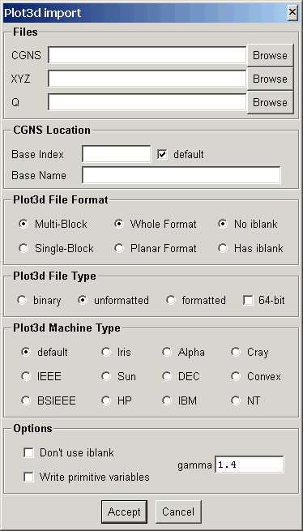
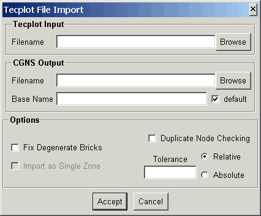
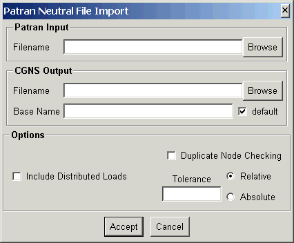

This document describes the import routines which convert data from other formats to CGNS. The following import utilities are currently available.
| PLOT3D | plot3d_to_cgns | Converts a PLOT3D file to structured CGNS |
| Tecplot | tecplot_to_cgns | Converts a Tecplot file to unstructured CGNS |
| Patran | patran_to_cgns | Converts a Patran Neutral file to unstructured CGNS |
Converts a PLOT3D file to a structured CGNS file. No attempt is made to determine the type of PLOT3D file, you must tell the import routine what type of PLOT3D file to expect through the command line argument list. The default is a multi-block, binary file with no iblank array, written as whole format.
The program is executed from the command line as:
plot3d_to_cgns options XYZfile Qfile CGNSfile
where XYZfile and CGNSfile are required. If Qfile is given, then the solution will be output to the CGNS file, otherwise just the grid will be written. The command line options are:
| option | description |
| -s | single block PLOT3D file |
| -p | planar grid format |
| -i | PLOT3D file contains an iblank array |
| -n | read iblank array, but ignore it |
| -f | formatted (ASCII) PLOT3D file |
| -u | Fortran unformatted PLOT3D file |
| -M mach | machine type for binary or unformatted PLOT3D file. Mach
is one of: ieee, bsieee, iris, alpha, hp, ibm, sun, dec, cray, convex, nt or linux. Case of mach is not significant, and only the first 2 characters are used. |
| -d | use double-precision (64-bit) |
| -b base | use CGNS base index base. |
| -B name | set CGNS base name to name. |
| -c | convert PLOT3D solution to primitive variables |
| -g gamma | gamma for data conversions (default is 1.4) |
The following panel is created when launched from the ADFviewer GUI:

This allows interactive selection of the input and output files and options. The Accept button will then construct the command line and run plot3d_to_cgns. If the import is successfull, ADFviewer will read and display the CGNS file.
Converts a Tecplot file to an unstructured CGNS file. Both ASCII and binary files are supported.
The program is executed from the command line as:
tecplot_to_cgns options Tecplotfile CGNSfile
where Tecplotfile and CGNSfile are required. The command line options are:
| option | description |
| -f | Fix degenerate brick elements |
| -d | Eliminate duplicate nodes using a relative tolerance. The relative tolerance is based on an average distance computed from the bounding box surrounding the nodes divided by the number of nodes. The distance between nodes is then compared with this distance times the input tolerance value. |
| -D | Eliminate duplicate nodes using an absolute tolerance. The tolerance specifies the absolute distance between nodes for duplicate node comparisons. |
| -t tol | Duplicate node checking tolerance. Default value is 10e-6. |
| -B name | Set CGNS base name to name. |
The following panel is created when launched from the ADFviewer GUI:

This allows interactive selection of the input and output files and options. The Accept button will then construct the command line and run tecplot_to_cgns. If the import is successfull, ADFviewer will read and display the CGNS file.
Converts a PATRAN Neutral file to an unstructured CGNS file. Reads packet 01 (nodes) as nodes, packet 02 (elements) as elements, and nodes (type 5) from packet 21 (named groups) as element sets. A command line option is available to read packet 06 (loads) also. All other packets are read, but not processed.
The program is executed from the command line as:
patran_to_cgns options Patranfile CGNSfile
where Patranfile and CGNSfile are required. The command line options are:
| option | description |
| -l | Process packet 6 - distributed loads |
| -d | Eliminate duplicate nodes using a relative tolerance. The relative tolerance is based on an average distance computed from the bounding box surrounding the nodes divided by the number of nodes. The distance between nodes is then compared with this distance times the input tolerance value. |
| -D | Eliminate duplicate nodes using an absolute tolerance. The tolerance specifies the absolute distance between nodes for duplicate node comparisons. |
| -t tol | Duplicate node checking tolerance. Default value is 10e-6. |
| -B name | Set CGNS base name to name. |
The following panel is created when launched from the ADFviewer GUI:

This allows interactive selection of the input and output files and options. The Accept button will then construct the command line and run patran_to_cgns. If the import is successfull, ADFviewer will read and display the CGNS file.